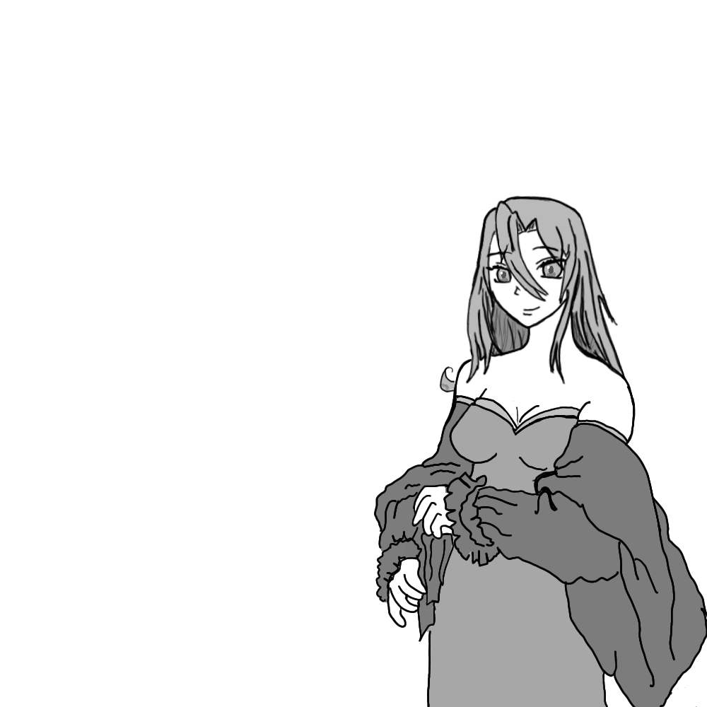

Felisin watched intently as the priest walked over in her direction. Bound in shackles and having a bleak and horrendous view of the impending future, seeing a familiar face brought a strange feeling of happiness to her. Even a ray of hope that her freedom and dignity will be returned, though that was as faint as an assassin's footsteps. Even the landscape around her provided a sense of dread, as she could see naught but barren lands all around her, seeming to stretch to eternity.
The priest was now closer. The two solitary soldiers who were escorting Felisin and the rest of the shackled slaves were in internal conflict about their course of action with the priest. They were travelling in an abandoned and lawless land. Any wealth travelling through this land mysteriously disappeared and was never found. Hence most merchants and travelling bands preferred to use other routes. Mysteriously enough the bandits inhabiting this land found no need for slaves. Many slave traders would therefore use this path to extricate themselves of the tolls and taxes they would otherwise face on different paths. Most would survive the harsh landscape, most, but it was a risk worth taking.
The priest though clearly was not a slave trader, signifying him to be dangerous and powerful. The soldiers faltered, wary about this mysterious appearance. As if sensing their doubts, the priest said “Fear not, soldiers of Malazan. I come not for disputes. But rather to interact with a particular slave you are carrying.”
“And what interest may you have in slaves. O priest? These are but ill-fated humans destined to work in the Ottoral mines north until the end of their lives.” The soldier with a scar under his left eye barked.
“Oh, it seems you are unaware of the lives of these slaves. I take it you started carrying these slaves after they were deposited on this side of the sea by Malazan’s fleets?”
“Well, even later than that, but what could be so special about a bunch of slaves. Their complete silence throughout their journey indicates that they led pretty bland lives before.”
“Ah. If only, then they would be saved from this fate. Alas, the hatred for the nobles among the commons on this side of the sea is no secret. If they talked you would have easily attributed their deaths to bandits, and none would be left by now.”
Felisin gulped in fear. Their suffering was now near. With their identities revealed they would now face the retribution that her ancestors had brought on them. After conquering the other side of the sea, the nobles had forced the previous king to impose heavy taxes on the conquered land as part of war reparations. This had only led to poverty and death, while the nobles lived their luxurious lives with the newfound money.
“What! These are nobles! Turned to slaves? Does Laseen - the Vizier turned King, share our hatred of these scumbags? And fear not priest. I shan’t kill them, for a more tortuous and miserable life awaits them at the mines. But maim them I shall.”
“You shall do no such thing. Unless you want to face my wrath, ‘fore I will be accompanying you to the mines. Got some work in the Mine city. And now Felisin, I hope you still remember me.”
“Oh yes, priest. Even though I was young I still remember the beautiful ritual you had performed for our house. Back when father and mother were still alive, and my sister was…. still my sister. ” Felisin said, the poignant memory of her sister’s betrayal coming back again.
After his brother had deserted the army, which was still a debatable claim, the family had broken into ruins. Father had suffered a heart attack right on hearing the devastating news. Mother’s demise had followed in his wake. That left only her and her sister. And she had not expected the betrayal that would occur even when they were freshly mourning the catastrophe.
She still remembered it as clearly as the back of her hands. She was sleeping comfortably in her linen bed, in her beautifully decorated room when she was suddenly woken up by the hammering at the door. It was suddenly broken open and four soldiers sprawled into her room, took her by surprise and cuffed her hands. She was in utter shock, unable to decide whether to mourn about her untimely arrest or her family’s sorrow. In such a trance was she, when they took her to a line and connected her shackles to the chain connecting all those standing in the line.
She looked around for a sign of her sister, her final ray of hope. Atleast I get to die by my sister she had thought at that time, her last anchor to sanity. But to her utter dismay her sister, Travore, was nowhere to be found. Her mind raced with dark, dreadful thoughts. What had happened to her sister? Had she been assigned to some other slave consignment, or worse, was she … . She was about to go into another sorrowful trance when she saw a familiar face sitting on a horse. Travore! And that too on a horse! She was brimming full of joy. At last her savior had finally arrived, she would finally free her and she would be back in her house in no time, considering her arrest to be naught but a bad dream caused due to some erroneous soldiers. But alas it was not to be.
“Adjunct Travore, all the treasonous and corrupt nobles that you had enlisted in your message have been bound and chained. On your order, their transportation to the Ottaral mines shall start.” One of the soldiers near Travore said in a submissive, respectful manner.
Adjunct, oh what luck! My sister is now right hand to the incumbent king. Now finally I will be able to freely walk the streets of the capital without anyone calling me a traitor. Felisin thought, her mind filling with happiness faster than a leopard’s pace. Now all that was left was for Travore to have a glance at her, be shocked, then call her out and everything would be normal again.
“Sis, I am here”. Felisin shouted loudly. Travore made no reaction to it.
A little shocked, Felisin shouted once again, “Travore, it's me Felisin, They have chained me too.”. At this Travore turned to her direction and glanced at her.
“Perhaps my sister has forgotten that she is now a slave. Soldier grant the girl fifty lashes so that she may learn her new role and treat others with respect.” Travore said calmly.
On hearing this word, Felisin’s mind and sanity shattered like fallen glass. She could no longer make any coherent thoughts, her mind filled with despair and dread. And so she had quietly and with little self-awareness made the journey to her destined location, where she was to work as a slave for the rest of her life. Until now, when she saw a familiar face and some sense of her self-awareness returned.
“Well yes times change my dear child. Your family is held in a high regard nowadays. Although that has come at quite a cost. ” The priest said.
“Alas, I think it was necessary. My family’s name is more important than me.” Felisin said. She had a strange feeling for her sister. It was not hate, but something different. It was as if that hate had been wrapped with the layer of knowing that the hate was born due to vital and necessary actions. She had succumbed to the fact that she would now work as a slaved miner for the rest of her life. An imperative sacrifice was what she thought of herself.
“Well that is debatable. Anyways I am Hood. I had given a lifelong oath to your father to watch over his children once he was gone. Your brother is most likely dead, your sister doesn’t seem to need any protection. You though seem to be in the most dire danger.” The priest, his name revealed to be Hood, now said.
“Holy one, I have accepted my life as a miner. There is no need for any protection now. I will work as a slave for the rest of my life, my sacrifice a vital one.”
“Well I cannot stop you if you willingly want this life. Nevertheless I shall watch over you for the first two months of your new, despondent life. If all seems well then, then I shall leave you.”
“Very well then. Although I have nothing of value right now, so I can only give you my thanks.”
“No need” Hood said. And so they continued in their journey towards the slave minetown.
